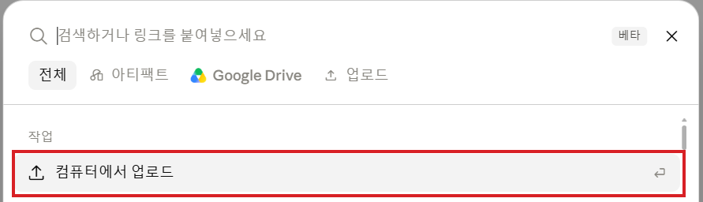
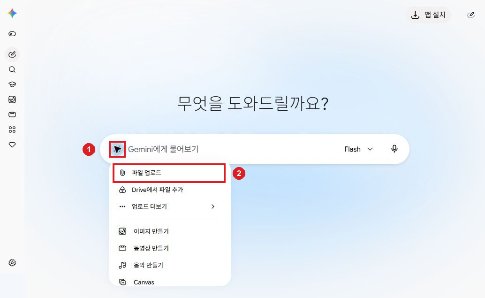

0. 업무에 쓰기 전에 알아둘 기본 개념
목표: AI에 요청할 때 필요한 기본 용어와 요청 구성을 이해합니다.
지금 할 일: 아래 기본 개념과 요청 예시를 읽고 계정과 앱 준비로 이동하세요. 이 장에는 별도 준비물이 없습니다.
OT 30분: 기본 개념 → 요청 구성 → 실습 준비 확인 순서입니다.
기본 개념을 짧게 이해하기
| 용어 | 뜻 | 업무에서 쓰는 방법 |
|---|---|---|
| LLM | 입력에 맞는 언어 답변을 생성하는 모델입니다. 사실·계산 오류가 있을 수 있습니다. | 보고서 초안을 받고 원자료와 대조합니다. |
| 토큰 | 모델이 입력·출력을 처리하는 작은 단위입니다. 한 글자나 한 단어와 항상 같지는 않습니다. | 긴 자료에서는 필요한 문서·항목을 지정합니다. |
| 컨텍스트 | 이번 답변에 참고하는 요청·앞선 대화·첨부자료 등입니다. | 보고기간·단위·파일명을 함께 줍니다. |
| 프롬프트 | AI에 보내는 요청입니다. | 목적·자료·조건·결과 형식·확인 기준을 적습니다. |
| 지침 | 작업할 때 따를 기준입니다. | “없는 날짜는 만들지 말고 확인 필요로 표시해.” |
| 스킬 | 반복 업무에 쓸 지침·절차를 저장해 다시 사용하는 기능입니다. 서비스마다 방식이 다릅니다. | FAQ를 근거로 답변하는 순서를 저장합니다. |
| 플러그인 | 스킬이나 연결 기능 등을 묶어 설치·사용하는 기능입니다. | 보고서 작성 절차를 새 대화에서 다시 사용합니다. |
요청을 다섯 가지로 정리하기
목적 → 자료 → 조건 → 결과 → 확인 기준을 적습니다.
목적: 월별 실적 보고서 초안 작성
자료: 첨부한 실적 Excel과 보고서 입력 메모
조건: 메모의 기간·단위를 사용하고 없는 사실은 확인 필요로 표시
결과: 요약 3문장, 업무별 표, 확인사항
확인 기준: 합계·비율의 계산식과 근거 파일·시트·열을 제시
위 문장은 요청 구성 예시입니다. 실제 첨부·전송은 ChatGPT 실습에서 합니다.
대화를 이어갈 때와 새로 시작할 때
같은 보고서를 고칠 때는 “방금 작성한 보고서에서…”로 이어갑니다. 다른 업무라면 새 대화를 열고 목표·조건·자료를 다시 줍니다.

파일 추가 메뉴의 컴퓨터에서 업로드를 선택합니다.

Gemini에서는 입력창 왼쪽 메뉴의 파일 업로드를 선택합니다. 각 도구의 실습에서 해당 준비물을 첨부합니다.
다음으로 할 일
계정과 앱 준비에서 설치된 앱과 Gemini 웹을 열고 실습 파일을 확인하세요. 그다음 ChatGPT 보고서 실습으로 이동합니다.
이 과정에서는 보고서 재사용을 플러그인, 자료 검토를 Gemini 노트북, 고객 답변 재사용을 스킬로 배웁니다. 해당 메뉴가 안 보이면 다음 장의 대체 행동을 따릅니다.